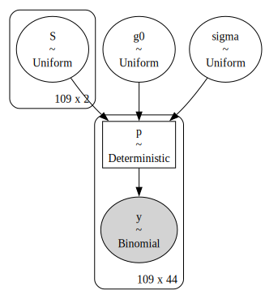
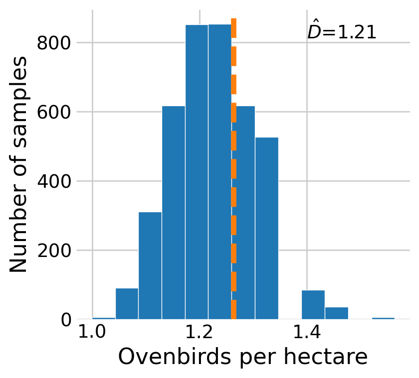
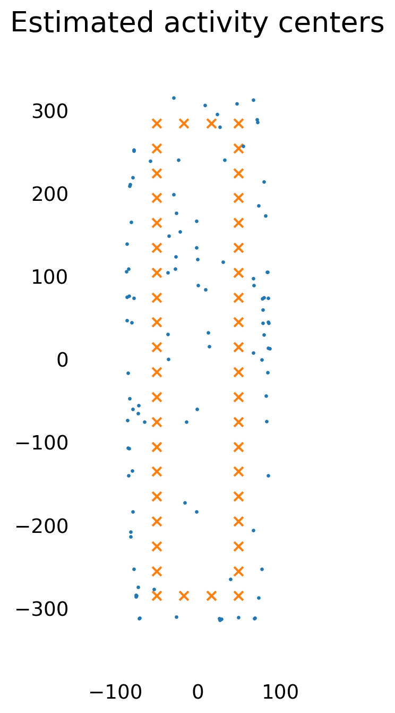

In this notebook, I present an approach to fitting spatial capture-recapture (SCR) models in PyMC. SCR expands upon traditional capture-recapture by incorporating the location of the traps in the analysis. This matters because, typically, animals that live near a particular trap are more likely to be caught in it. In doing so, SCR links individual-level processes to the population-level, expanding the scientific scope of simple designs.
In this notebook, I train the simplest possible SCR model, SCR0 (Royle et al. 2013, chap. 5), where the goal is estimating the true population size \(N\). Similar to the other closed population notebooks, I do so using parameter-expanded data-augmentation (PX-DA). I also borrow the concept of the detection function from the distance sampling notebook.
As a motivating example, I use the ovenbird mist netting dataset provided by Murray Efford via the secr package in R. The design of the study is outlined in Efford, Dawson, and Robbins (2004) and Borchers and Efford (2008). In this dataset, ovenbirds were trapped in 44 mist nets over 8 to 10 consecutive days during the summers of 2005 to 2009.
import numpy as npimport pandas as pdimport matplotlib.pyplot as pltimport pytensor.tensor as pt import pymc as pmimport arviz as azfrom pymc.distributions.dist_math import binomln, logpow# hyper parametersSEED =42RNG = np.random.default_rng(SEED)BUFFER =100M =200# plotting defaultsplt.style.use('fivethirtyeight')plt.rcParams['axes.facecolor'] ='white'plt.rcParams['figure.facecolor'] ='white'def invlogit(x):'''Inverse logit function'''return1/ (1+ np.exp(-x))def euclid_dist(X, S, library='np'):'''Pairwise euclidian distance between points in (M, 2) and (N, 2) arrays''' diff = X[np.newaxis, :, :] - S[:, np.newaxis, :]if library =='np':return np.sqrt(np.sum(diff **2, axis=-1))elif library =='pm': return pm.math.sqrt(pm.math.sum(diff **2, axis=-1))def half_normal(d, s, library='np'):'''Half normal detection function.'''if library =='np':return np.exp( - (d **2) / (2* s **2))elif library =='pm':return pm.math.exp( - (d **2) / (2* s **2))def exponential(d, s, library='np'):'''Negative exponential detection function.'''if library =='np':return np.exp(- d / s)elif library =='pm':return pm.math.exp(- d / s)# coordinates for each trap ovenbird_trap = pd.read_csv('ovenbirdtrap.txt', delimiter=' ')trap_count, _ = ovenbird_trap.shape# information about each trap trap_x = ovenbird_trap.xtrap_y = ovenbird_trap.yX = ovenbird_trap[['x', 'y']].to_numpy()# define the state space around the trapsx_max = trap_x.max() + BUFFERy_max = trap_y.max() + BUFFERx_min = trap_x.min() - BUFFERy_min = trap_y.min() - BUFFER# plot the trap locationsfig, ax = plt.subplots(figsize=(4, 4))# plot the trapsax.scatter(trap_x, trap_y, marker='x', s=40, linewidth=1.5, color='C1')ax.set_ylim((y_min, y_max))ax.set_xlim((x_min, x_max))ax.annotate('44 nets\n30m apart', ha='center', xy=(55, -150), xycoords='data', color='black', xytext=(40, 30), textcoords='offset points', arrowprops=dict(arrowstyle="->", color='black', linewidth=1, connectionstyle="angle3,angleA=90,angleB=0"))# aesthetics ax.set_title('Mist net locations')ax.grid(False)plt.show()
One difference between spatial and traditional (non-spatial) capture is the addition of the trap identifier in the capture history. Whereas a traditional capture history is [individual, occasion], a spatial capture history might be [individual, occasion, trap].
In the ovenbird example, I ignore the year dimension, pooling parameters across years, which allows for better estimation of the detection parameters. My hack for doing so is treating every band/year combination as a unique individual in a combined year capture history. This is easy to implement, creates an awkward interpretation of \(N\) (see below).
# ovenbird capture historyoven_ch = pd.read_csv('ovenbirdcapt.txt', delimiter=' ')# create a unique bird/year identifier for each individualoven_ch['ID'] = oven_ch.groupby(['Year','Band']).ngroup()occasion_count = oven_ch.Day.max()# merge the datasets, making sure that traps with no detections are included ovenbird = ( ovenbird_trap.merge(oven_ch[['ID', 'Net', 'Day']], how='left') [['ID', 'Day', 'Net', 'x', 'y']] .sort_values('ID') .reset_index(drop=True))ovenbird.head(10)
ID
Day
Net
x
y
0
0.0
1.0
2
-50.0
-255.0
1
1.0
9.0
20
-50.0
285.0
2
1.0
1.0
15
-50.0
135.0
3
2.0
6.0
17
-50.0
195.0
4
2.0
9.0
27
49.0
165.0
5
2.0
1.0
15
-50.0
135.0
6
2.0
1.0
14
-50.0
105.0
7
3.0
1.0
41
49.0
-255.0
8
3.0
3.0
39
49.0
-195.0
9
3.0
1.0
42
49.0
-285.0
Simulation
Before estimating the parameters, I perform a small simulation. The simulation starts with a core idea of SCR: the activity center. The activity center \(\mathbf{s}_i\) is the most likely place that you’d find an individual \(i\) over the course of the trapping study. In this case, I assume that activity centers are uniformly distributed across the sample space. (The study takes place in homogenous habitat.)
I compute the probability of detection for individual \(i\) at trap \(j\) as \(p_{i,j}=g_0 \exp(-d_{i,j}^2/2\sigma^2),\) where \(g_0\) is the probability of detecting an individual when it’s activity center is at the trap, \(d_{i,j}\) is the euclidean distance between the trap and the activity center, and \(\sigma\) is the detection range parameter.
# true population sizeN =150# simulate activity centerssx_true = RNG.uniform(x_min, x_max, N)sy_true = RNG.uniform(y_min, y_max, N)S_true = np.column_stack((sx_true, sy_true))# true distance between the trap and the activity centersd_true = euclid_dist(X, S_true)# detection parametersg0_true =0.025sigma_true =73# simulate the number of captures at each trap for each individualcapture_probability = g0_true * half_normal(d_true, sigma_true)sim_Y = RNG.binomial(occasion_count, capture_probability)# filter out undetected individualswas_detected = sim_Y.sum(axis=1) >0sim_Y_det = sim_Y[was_detected]n_detected =int(was_detected.sum())
Following Royle et al. (2013), Chapter 5, I first fit the version of the model where we assume that we know the true population size. In this case, I’m only estimating the detection parameters and the activity center locations.
# upper bound for the uniform prior on sigmaU_SIGMA =150with pm.Model() as known:# priors for the activity centers sx = pm.Uniform('sx', x_min, x_max, shape=n_detected) sy = pm.Uniform('sy', y_min, y_max, shape=n_detected) S = pt.stack([sx, sy], axis=1)# priors for the detection parameters g0 = pm.Uniform('g0', 0, 1) sigma = pm.Uniform('sigma', 0, U_SIGMA)# probability of capture for each individual at each trap distance = euclid_dist(X, S, 'pm') p = pm.Deterministic('p', g0 * half_normal(distance, sigma))# likelihood pm.Binomial('y', p=p, n=occasion_count, observed=sim_Y_det )pm.model_to_graphviz(known)

Figure 2: Visual representation of the model where \(N\) is known.
with known: known_idata = pm.sample()
Auto-assigning NUTS sampler...
Initializing NUTS using jitter+adapt_diag...
Multiprocess sampling (4 chains in 4 jobs)
NUTS: [sx, sy, g0, sigma]
Sampling 4 chains for 1_000 tune and 1_000 draw iterations (4_000 + 4_000 draws total) took 26 seconds.
Figure 3: Trace plots for model where \(N\) is known. The true parameter values are shown by vertical and horizontal lines.
The trace plots show reasonable agreement between the true parameter values and the estimated values, although \(g_0\) appears to be overestimated.
Ovenbird density
Now, I estimate the density \(D\) for the ovenbird population. Like distance sampling, SCR can robustly estimate the density of the population, regardless of the size of the state space. The difference between the model above and this one is that we use PX-DA to estimate the inclusion probability \(\psi,\) and subsequently \(N.\) First, I convert the DataFrame to a (n_detected, n_traps) array of binomial counts.
def get_Y(ch):'''Get a (individual_count, trap_count) array of detections.'''# count the number of detections per individual per trap detection_counts = pd.crosstab(ch.ID, ch.Net, dropna=False)# remove the ghost nan individual detection_counts = detection_counts.loc[~detection_counts.index.isna()] Y = detection_counts.to_numpy()return YY = get_Y(ovenbird)detected_count, trap_count = Y.shape# augmented spatial capture histories with all zero historiesall_zero_history = np.zeros((M - detected_count, trap_count))Y_augmented = np.row_stack((Y, all_zero_history))
Similar to the occupancy notebook, I use a custom distribution to model the zero-inflated data. This is necessary because the zero inflation happens at the individual (row) level. This is, in fact, the same distribution as the occupancy model, although including the binomial coefficient.
Figure 5: Trace plots for the ovenbird model using data augmentation. Maximum likelihood estimates are shown by vertical and horizontal lines.
The estimates are quite close to the maximum likelihood estimates, which I estimated using the secr package in R.
Finally, I estimate density \(D\) using the results. As in the closed capture-recapture and distance sampling notebooks, I use the posterior samples of \(\psi\) and \(M\) to sample the posterior of \(N.\) This \(N,\) however, has an awkward interpretation because I pooled across the years by combining all the detection histories. To get around this, I compute the average annual abundance by dividing by the total number of years in the sample. Then, I divide by the area of the state space.
psi_samps = oven_idata.posterior.psi.values.flatten()N_samps = RNG.binomial(M, psi_samps)# kludgy way of calculating abundance year_count =5average_annual_abundance = N_samps // year_count# area of the state space in terms of hectares ha =100*100mask_area = (x_max - x_min) * (y_max - y_min) / ha# density D_samples = average_annual_abundance / mask_area D_mle =1.262946fig, ax = plt.subplots(figsize=(4,4))ax.hist(D_samples, edgecolor='white', bins=10)ax.axvline(D_mle, linestyle='--',color='C1')ax.set_xlabel('Ovenbirds per hectare')ax.set_ylabel('Number of samples')ax.text(1.5, 1000, f'$\hat{{D}}$={D_samples.mean():.2f}', va='center', ha='center')plt.show()

Figure 6: Posterior distribution of the density \(D\) of ovenbirds. The maximum likelihood estimate is shown by the dotted red line.
I also plot the estimated activity centers for every detected individual, as well as the posterior distribution for two of the detected individuals.
sx_samps = az.extract(oven_idata).sxsy_samps = az.extract(oven_idata).sysx_mean = sx_samps[:detected_count].mean(axis=1)sy_mean = sy_samps[:detected_count].mean(axis=1)one =49sx1 = sx_samps[one]sy1 = sy_samps[one]two =2sx2 = sx_samps[two]sy2 = sy_samps[two]# plot the trap locationsfig, (ax0, ax1) = plt.subplots(2, 1, sharex=True, sharey=True, figsize=(5, 10), tight_layout=True)# plot the trapsax0.scatter(trap_x, trap_y, marker='x', s=40, linewidth=1.5, color='C1')ax0.set_ylim((y_min, y_max))ax0.set_xlim((x_min, x_max))# plot the mean activity centersax0.scatter(sx_mean, sy_mean, marker='o', s=4, color='black')# aesthetics ax0.set_title('Estimated activity centers')ax0.grid(False)# plot the trapsax1.scatter(trap_x, trap_y, marker='x', s=40, linewidth=1.5, color='C1')ax1.set_ylim((y_min, y_max))ax1.set_xlim((x_min, x_max))# plot the distributions of the activity centersax1.scatter(sx1, sy1, marker='o', s=1, color='gray', alpha=0.2)ax1.scatter(sx2, sy2, marker='o', s=1, color='gray', alpha=0.2)# plot the meanax1.scatter(sx1.mean(), sy1.mean(), marker='o', s=20, color='black')ax1.scatter(sx2.mean(), sy2.mean(), marker='o', s=20, color='black')# add the labelax1.text(sx1.mean(), sy1.mean() +5, f'{one}', ha='center', va='bottom')ax1.text(sx2.mean(), sy2.mean() +5, f'{two}', ha='center', va='bottom')# aesthetics ax1.set_title('Posterior of two activity centers')ax1.grid(False)plt.show()

Figure 7: Estimated activity centers for the detected individuals, and posterior distributions for two of them.
Finally, I plot the posterior distribution of the detection function.
Figure 8: Posterior distribution for the detection function. The line represents the posterior mean while the shaded area is the 96% interval.
References
Borchers, David L, and MG2432407 Efford. 2008. “Spatially Explicit Maximum Likelihood Methods for Capture–Recapture Studies.”Biometrics 64 (2): 377–85.
Efford, Murray G, Deanna K Dawson, and Chandler S Robbins. 2004. “DENSITY: Software for Analysing Capture-Recapture Data from Passive Detector Arrays.”Animal Biodiversity and Conservation 27 (1): 217–28.
Royle, J Andrew, Richard B Chandler, Rahel Sollmann, and Beth Gardner. 2013. Spatial Capture-Recapture. Academic press.